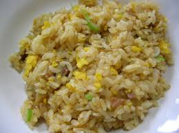

おすすめ冷凍炒飯
１位 ニチレイ 本格炒め炒飯
出典： https://www.amazon.co.jp
お店の炒飯を求めている人におすすめ
この姿を見てまず感じたのは、
他の冷凍炒飯と比べて圧倒的に卵の影響で黄金色にキラキラしているということ。
これは恐らく具がほとんど無い 米・卵・焼豚・ネギの４種類で構成される。
シンプル イズ ザ ベストだからこその輝き。

食べたときの感想は、
「お店のチャーハンや・・・」
シンプルな味わいでそれでいてしつこくなくちょうどいい味付け
これをチャーハンと言わずしてなにがチャーハンなのか聞きたい
冷凍チャーハン界で１６年連続No.1は伊達じゃなかった。
味の素 焦がしにんにくのマー油と葱油が香るザ☆チャーハン

出典： https://www.amazon.co.jp
味の素の人気商品 味の濃いチャーハンが好きな人におすすめ
電子レンジを開けたときの焦しニンニクのおいしそうなにおいが漂ってきます。
他の冷凍チャーハンよりも大きい具材が印象的。

食べた時の感想は、
「チャーシューと焦しニンニク相性が抜群や・・・」
濃い味付けでいてくどくない流石に600グラムを１人で食べるには量が多いが
噛むほどに広がるチャーシューのうまみ
がっつりしたチャーハンを食べたい人におすすめ
ところでマー油ってなに？
３位 レンジでふっくらパラっと五目炒飯
出典： https://www.amazon.co.jp
具が豊富なチャーハンが食べたい人におすすめ
五目炒飯と名乗っているだけあって具が豊富。
人参やしいたけ、ネギ、たけのこ、きくらげ、卵、チャーシューの７種類が入っています。
特に印象が強かったのは、タケノコとネギ。
タケノコとネギのシャキシャキ感がとてもよくチャーハンに合います。
ネギの風味が強いので、ネギが嫌いな人はきついかも。
味はあっさり目の味付けでしつこく無いので食べやすい味です。
XO醤がたくさん入っているだけある。
XO醤がなにかわからないけど。